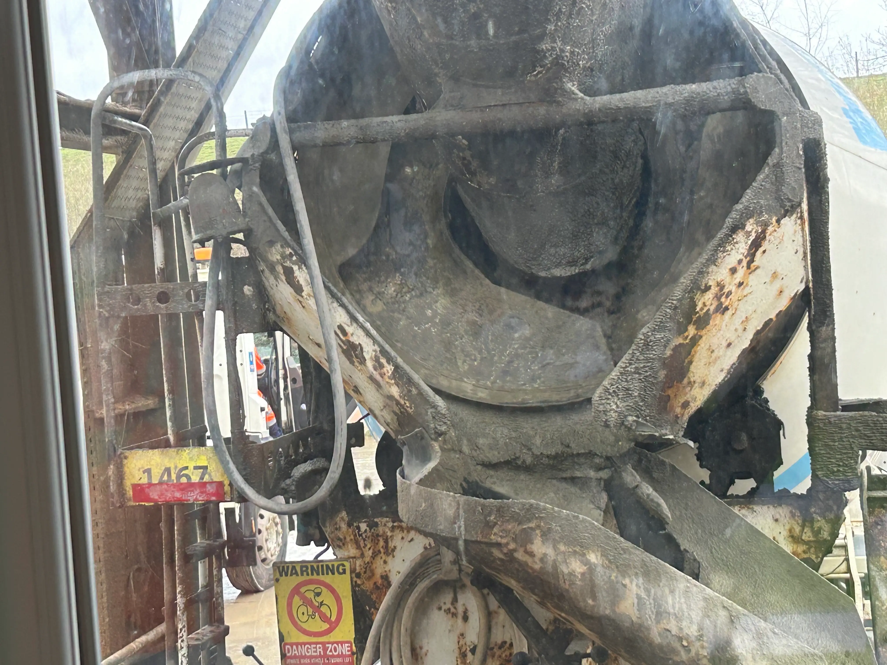
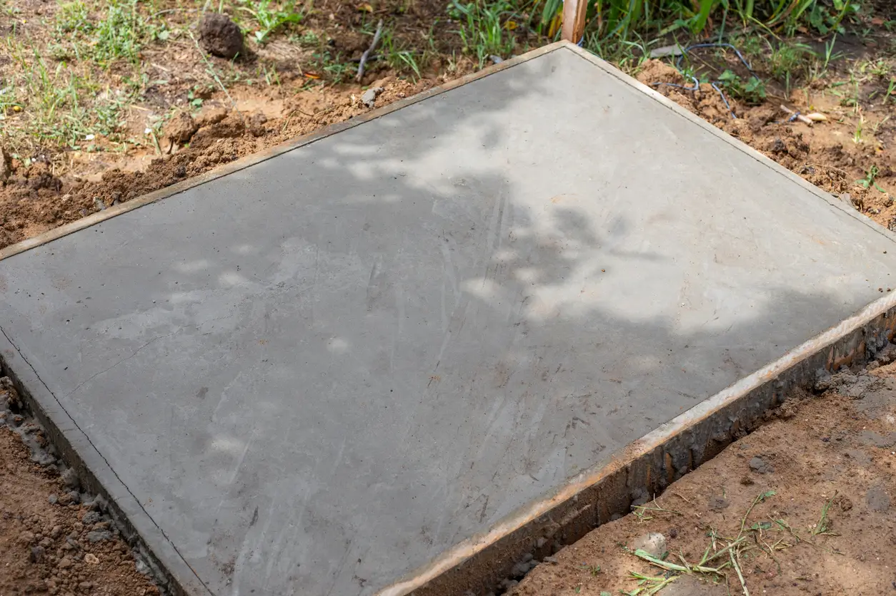
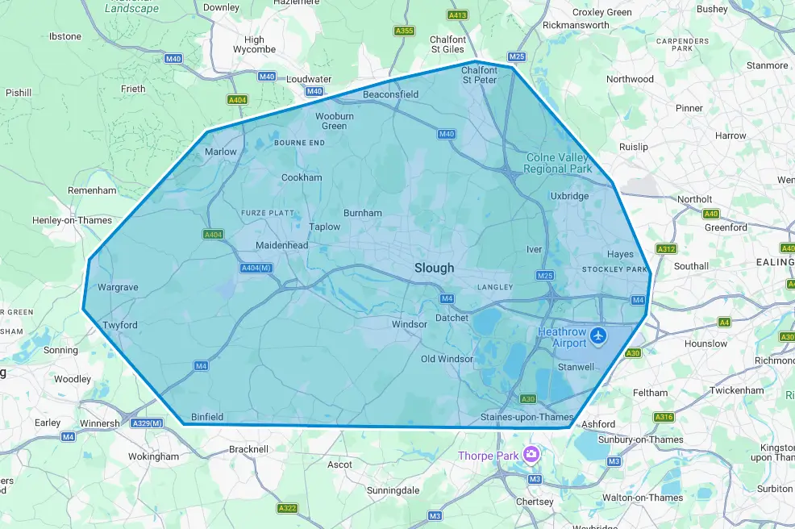

Profesional Concrete Shed Base Contractor — Slough
Concrete Shed Base Installations Slough
Long term concrete shed bases installed all across Slough for sheds, summerhouses, workshops & log cabins.
We provide concrete shed base installations across Slough, creating strong, level foundations built to properly support sheds, garden rooms, workshops, summer houses, and outdoor structures of all sizes. We use quality concrete mixes, solid ground preparation, and reinforced installation methods to ensure a durable base that stays stable over time.
Good bases aren't just about pouring concrete onto the ground. Proper excavation, sub-base preparation, levelling, thickness, drainage consideration, and reinforcement all play an important role in creating a base that won’t crack, sink, or shift prematurely. We take the time to prepare each base correctly concrete shed bases aren't just about pouring concrete onto the ground. It’s planned around soil conditions, garden access, intended load, and long-term performance.
The process we follow for concrete base installations starts way before anything arrives at your garden on site. The concrete is produced and checked back at the batching plant for strength and consistency.
Depending on the setup, it’s either mixed at the plant or inside the volumetric lorry. This allows quantities, timing, and access to be coordinated properly.

Concrete prepared in a volumetric lorry before Slough site installation.
Every stage matters — from how the concrete is mixed to how the pour is scheduled. Delivery is planned locally so arrival times suit access, setup, and pour readiness at your Slough property.
On site, the area is prepared before any concrete is laid. This includes excavation to the required depth, installing weed membrane where needed, and forming a compacted sub-base. Levels are checked before pouring so the finished base is flat, even, and suitable for the structure it will support.
Each shed base project is approached with structure and care. We work and deliver with the same goal for each job, which is a concrete base that drains properly, stays level, and avoids long term problems like cracking or movement.





All our concrete bases installed with strength & care ensuring long term performance

Even a high quality shed can deteriorate quickly if it’s installed on an uneven or poorly prepared surface. If you try to install a base on uneven or poorly prepared surfaces, common problems to your building can include:
A properly designed concrete shed base removes these risks. Correct depth, reinforcement where required, and a compacted sub-base keeps the slab stable long-term.
This is a specialist service for residential homeowners in Slough. We install solid, flush concrete bases in gardens — we do not supply or erect the shed itself, only the concrete base it sits on.
The work for your base installation focuses on planning, preparation, concrete supply and then lastly the installation so your base performs properly long into the future.
The bases that we install are installed for common Slough garden structures that need stable, level foundations before erection.
Most shed base installations in Slough take place in residential gardens with limited access. Side passages, shared driveways, and close neighbours that affect how concrete is delivered and how the work is planned.
Timing, coordination, and preparation ensure deliveries suit residential access and minimises disruption.
If you’re a local homeowner needing a concrete shed base installed in Slough, give us a call and we’ll confirm suitability for your project.
Call for a free site visitWhile most homeowners enquire for concrete shed bases, this service also does bases for:
When we fit bases each base installation is designed around the structure it supports rather than a generic approach to all.
A common problem with concrete base installations is incorrect sizing or specification from the start. A base that’s too small, too thin, or not designed for the structure it will support can cause problems before the concrete itself even fails. These issues often don’t show immediately, but over time they lead to movement, instability, and unnecessary stress on the structure above.
The size of your base should allow for the full footprint of the structure, including slight overhang. This helps prevent water run off from sitting directly against timber edges and reduces long term wear. It also creates a cleaner finish around the base, especially in gardens where ground levels or surrounding surfaces vary slightly.
Thickness and overall specification vary depending on what’s being installed. A lightweight storage shed requires a different approach compared to a fully fitted garden room or log cabin with internal framing, insulation, and regular use. When we install bases we factor in how the structure will actually be used day to day to make sure the base performs as intended consistently rather than just meeting minimum requirements.
In Slough, we regularly see sheds upgraded, replaced, or expanded over time. Planning your concrete base with the future use in mind avoids the need for alterations later. A slightly more robust slab at the start gives you flexibility if your needs change, whether that’s upgrading to a larger structure or adding more weight internally.
Ground conditions across Slough are not identical from one garden to the next. Some areas sit on heavier clay that expands and contracts with moisture changes. Others include made ground from past building work or softer soil that has been turned repeatedly over the years. A concrete shed base installation needs to reflect those differences rather than follow a generic template.
When installing a concrete shed base in Slough, we consider how the ground behaves during prolonged rainfall, how surface water drains away from the slab, and how the structure will load the base over time. Garden buildings may appear lightweight, but once filled with tools, equipment, or internal framing, they place consistent pressure on the slab beneath.
Depth, sub-base preparation, and reinforcement (where required) are chosen around stability and longevity. The objective is not simply to create a flat surface on the day of installation, but to reduce the risk of settlement, cracking, or edge movement in the years ahead. Seasonal temperature shifts and wet winters in Berkshire can expose weaknesses quickly if groundwork has been rushed.

Final suitability is confirmed when you call.
To enquire for your base project, you can email your enquiry through or call directly on the phone.